library(ggplot2)
library(tibble)
library(zeallot)
library(COTAN)
options(parallelly.fork.enable = TRUE)
outDir <- "./e15.0_FD_CheckClustersUniformity"
setLoggingLevel(1)
setLoggingFile(file.path(outDir, "FindUniformGivenClustersInForebrainDorsal_E150.log"))Find uniform given cluster in Forebrain Dorsal E15.0
Relevant genes lists
genesList <- list(
"NPGs" = c("Nes", "Vim", "Sox2", "Sox1", "Notch1", "Hes1", "Hes5", "Pax6"),
"PNGs" = c("Map2", "Tubb3", "Neurod1", "Nefm", "Nefl", "Dcx", "Tbr1"),
"hk" = c("Calm1", "Cox6b1", "Ppia", "Rpl18", "Cox7c", "Erh", "H3f3a",
"Taf1", "Taf2", "Gapdh", "Actb", "Golph3", "Zfr", "Sub1",
"Tars", "Amacr"),
"layers" = c("Reln", "Lhx5", "Cux1", "Satb2", "Tle1", "Mef2c", "Rorb",
"Sox5", "Bcl11b", "Fezf2", "Foxp2")
)This is a version of the function checkClusterUniformity() adapted to be used in this markdown document
clusterIsUniform <- function(objCOTAN, cluster, cells, GDIThreshold = 1.4) {
cores <- 14L
cellsToDrop <- getCells(objCOTAN)[!getCells(objCOTAN) %in% cells]
objCOTAN <- dropGenesCells(objCOTAN, cells = cellsToDrop)
objCOTAN <- proceedToCoex(objCOTAN, cores = cores, saveObj = FALSE)
gc()
GDIData <- calculateGDI(objCOTAN)
gdi <- GDIData[["GDI"]]
names(gdi) <- rownames(GDIData)
gdi <- sort(gdi, decreasing = TRUE)
# Plot GDI
genesToRemark = list("Top 10 GDI genes" = names(gdi)[1L:5L])
genesToRemark <- append(genesToRemark, genesList)
plot <- GDIPlot(objCOTAN, GDIIn = GDIData,
GDIThreshold = GDIThreshold,
genes = genesToRemark,
condition = paste0("e15.0 cluster ", cluster))
rm(objCOTAN)
rm(GDIData)
gc()
# A cluster is deemed uniform if the number of genes
# with [GDI > GDIThreshold] is not more than 1%
highGDIRatio <- sum(gdi >= GDIThreshold) / length(gdi)
lastPercentile <- quantile(gdi, probs = 0.99)
isUniform <- highGDIRatio <= 0.01
plot(plot)
print(paste0("The cluster '", cluster, "' is ",
(if(isUniform) {""} else {"not "}), "uniform"))
print(paste0("The percentage of genes with GDI above ", GDIThreshold, " is: ",
round(highGDIRatio * 100.0, digits = 2), "%"))
print(paste0("The last percentile (99%) of the GDI values is: ",
round(lastPercentile, digits = 4)))
return(list("isUniform" = isUniform, "highGDIRatio" = highGDIRatio,
"lastPercentile" = lastPercentile, "GDIPlot" = plot))
}fb150ObjRaw <- readRDS(file = file.path("Data/MouseCortexFromLoom/SourceData/", "e15.0_ForebrainDorsal.cotan.RDS"))
fb150Obj <- readRDS(file = file.path("Data/MouseCortexFromLoom/", "e15.0_ForebrainDorsal.cotan.RDS"))Align to cleaned cells’ list
metaC <- getMetadataCells(fb150ObjRaw)[getCells(fb150Obj), ]
metaCDrop <- getMetadataCells(fb150ObjRaw)[!getCells(fb150ObjRaw) %in% getCells(fb150Obj), ]Extract the cells of class ‘Neuron’
metaNeuron <- metaC[metaC[["Class"]] == "Neuron", ]
sort(table(metaNeuron[["Subclass"]]), decreasing = TRUE)
Cortical or hippocampal glutamatergic Forebrain GABAergic
3969 610
Cajal-Retzius Mixed region GABAergic
145 21
Undefined Forebrain glutamatergic
16 15
Hypothalamus Mixed region glutamatergic
8 5
Mixed region and neurotransmitter Hindbrain glutamatergic
4 2
Hindbrain glycinergic Hypothalamus glutamatergic
2 2
Dorsal midbrain glutamatergic Mixed region
1 1 sort(table(metaNeuron[["ClusterName"]]), decreasing = TRUE)
Neur525 Neur511 Neur509 Neur510 Neur508 Neur507 Neur568 Neur504 Neur505 Neur516
826 540 402 402 397 183 181 174 147 137
Neur565 Neur524 Neur679 Neur493 Neur498 Neur497 Neur506 Neur502 Neur494 Neur574
133 108 105 93 79 51 46 42 41 41
Neur575 Neur492 Neur519 Neur526 Neur566 Neur501 Neur573 Neur499 Neur518 Neur560
41 38 31 28 28 24 24 23 22 20
Neur514 Neur523 Neur569 Neur557 Neur495 Neur520 Neur535 Neur542 Neur677 Neur527
19 19 18 16 15 15 14 14 14 13
Neur496 Neur512 Neur676 Neur517 Neur558 Neur503 Neur739 Neur559 Neur564 Neur538
11 11 11 10 9 8 8 7 7 6
Neur549 Neur561 Neur671 Neur695 Neur738 Neur747 Neur500 Neur536 Neur678 Neur534
6 6 6 6 6 6 5 5 5 4
Neur550 Neur570 Neur686 Neur731 Neur737 Neur513 Neur515 Neur528 Neur533 Neur539
4 4 4 4 4 3 3 3 3 3
Neur544 Neur571 Neur674 Neur675 Neur732 Neur531 Neur543 Neur548 Neur552 Neur554
3 3 3 3 3 2 2 2 2 2
Neur562 Neur670 Neur689 Neur740 Neur529 Neur530 Neur532 Neur537 Neur540 Neur553
2 2 2 2 1 1 1 1 1 1
Neur567 Neur572 Neur601 Neur614 Neur634 Neur647 Neur649 Neur672 Neur680 Neur681
1 1 1 1 1 1 1 1 1 1
Neur684 Neur693 Neur696 Neur726 Neur734 Neur749 Neur750 Neur751 Neur760 Neur771
1 1 1 1 1 1 1 1 1 1 Check uniformity of sub-class: Cajal-Retzius
FB_CaRe_Cells <-
rownames(metaNeuron)[metaNeuron[["Subclass"]] == "Cajal-Retzius"]
table(metaNeuron[FB_CaRe_Cells, "ClusterName"])
Neur674 Neur675 Neur676 Neur677 Neur678 Neur679 Neur686
3 3 11 14 5 105 4 c(FB_CaRe_IsUniform, FB_CaRe_HighGDIRatio,
FB_CaRe_LastPercentile, FB_CaRe_GDIPlot) %<-%
clusterIsUniform(fb150Obj, cluster = "Cajal-Retzius",
cells = FB_CaRe_Cells, GDIThreshold = 1.4)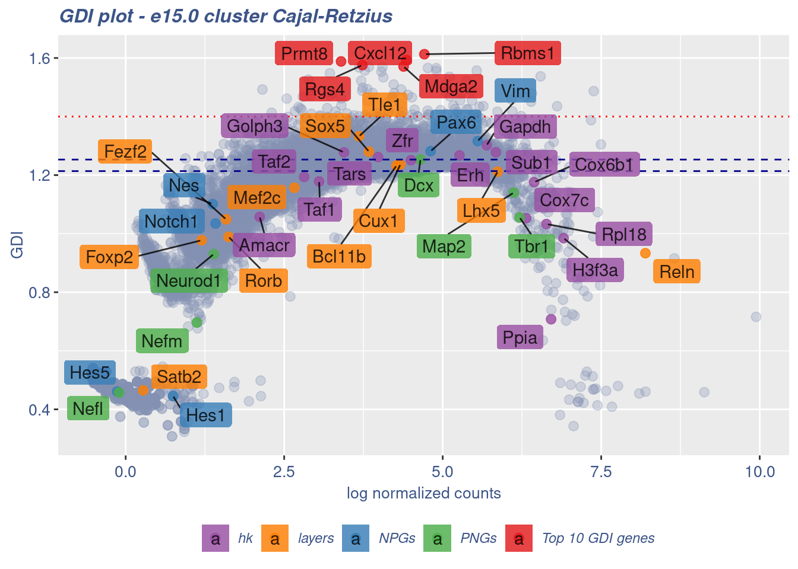
[1] "The cluster 'Cajal-Retzius' is uniform"
[1] "The percentage of genes with GDI above 1.4 is: 0.82%"
[1] "The last percentile (99%) of the GDI values is: 1.3896"Check uniformity of sub-class: Forebrain GABAergic
FB_GABA_Cells <-
rownames(metaNeuron)[metaNeuron[["Subclass"]] == "Forebrain GABAergic"]
table(metaNeuron[FB_GABA_Cells, "ClusterName"])
Neur529 Neur530 Neur531 Neur532 Neur533 Neur534 Neur535 Neur536 Neur537 Neur538
1 1 2 1 3 4 14 5 1 6
Neur539 Neur540 Neur542 Neur543 Neur544 Neur548 Neur549 Neur550 Neur552 Neur553
3 1 14 2 3 2 6 4 2 1
Neur554 Neur558 Neur559 Neur560 Neur561 Neur562 Neur564 Neur565 Neur566 Neur567
2 9 7 20 6 2 7 133 28 1
Neur568 Neur569 Neur570 Neur571 Neur572 Neur573 Neur574 Neur575 Neur747
181 18 4 3 1 24 41 41 6 c(FB_GABA_isUniform, FB_GABA_HighGDIRatio,
FB_GABA_LastPercentile, FB_GABA_GDIPlot) %<-%
clusterIsUniform(fb150Obj, cluster = "Forebrain_GABAergic",
cells = FB_GABA_Cells, GDIThreshold = 1.4)[1] "The cluster 'Forebrain_GABAergic' is not uniform"
[1] "The percentage of genes with GDI above 1.4 is: 12.68%"
[1] "The last percentile (99%) of the GDI values is: 1.6987"Check uniformity of sub-class: Cortical or hippocampal glutamatergic
FB_CHGl_Cells <-
rownames(metaNeuron)[metaNeuron[["Subclass"]] == "Cortical or hippocampal glutamatergic"]
table(metaNeuron[FB_CHGl_Cells, "ClusterName"])
Neur492 Neur493 Neur494 Neur495 Neur496 Neur497 Neur498 Neur499 Neur500 Neur501
38 93 41 15 11 51 79 23 5 24
Neur502 Neur503 Neur504 Neur505 Neur506 Neur507 Neur508 Neur509 Neur510 Neur511
42 8 174 147 46 183 397 402 402 540
Neur512 Neur513 Neur514 Neur515 Neur516 Neur517 Neur518 Neur519 Neur520 Neur523
11 3 19 3 137 10 22 31 15 19
Neur524 Neur525 Neur526 Neur527 Neur528
108 826 28 13 3 c(FB_CHGl_IsUniform, FB_CHGl_HighGDIRatio,
FB_CHGl_LastPercentile, FB_CHGl_GDIPlot) %<-%
clusterIsUniform(fb150Obj, cluster = "Cortical or hippocampal glutamatergic",
cells = FB_CHGl_Cells, GDIThreshold = 1.4)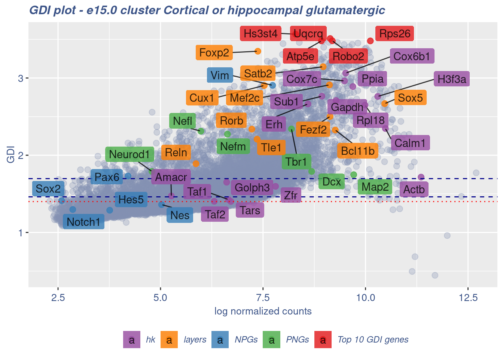
[1] "The cluster 'Cortical or hippocampal glutamatergic' is not uniform"
[1] "The percentage of genes with GDI above 1.4 is: 61.17%"
[1] "The last percentile (99%) of the GDI values is: 3.0064"Check uniformity of Cajal-Retzius cluster: Neur679
FB_Neur679_Cells <-
rownames(metaNeuron)[metaNeuron[["ClusterName"]] == "Neur679"]
c(FB_Neur679_IsUniform, FB_Neur679_HighGDIRatio,
FB_Neur679_LastPercentile, FB_Neur679_GDIPlot) %<-%
clusterIsUniform(fb150Obj, cluster = "Neur679",
cells = FB_Neur679_Cells, GDIThreshold = 1.4)[1] "The cluster 'Neur679' is uniform"
[1] "The percentage of genes with GDI above 1.4 is: 0.24%"
[1] "The last percentile (99%) of the GDI values is: 1.3392"Check uniformity of Forebrain GABAergic cluster: Neur568
FB_Neur568_Cells <-
rownames(metaNeuron)[metaNeuron[["ClusterName"]] == "Neur568"]
c(FB_Neur568_IsUniform, FB_Neur568_HighGDIRatio,
FB_Neur568_LastPercentile, FB_Neur568_GDIPlot) %<-%
clusterIsUniform(fb150Obj, cluster = "Neur568",
cells = FB_Neur568_Cells, GDIThreshold = 1.4)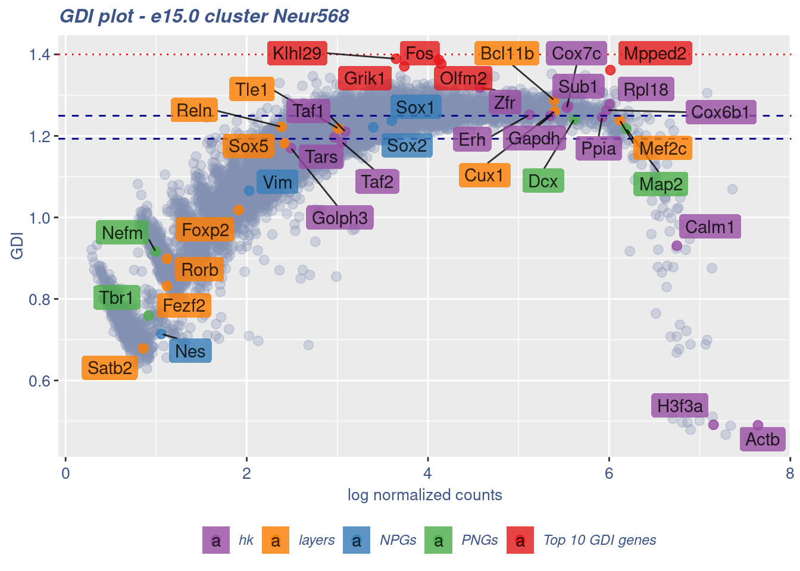
[1] "The cluster 'Neur568' is uniform"
[1] "The percentage of genes with GDI above 1.4 is: 0%"
[1] "The last percentile (99%) of the GDI values is: 1.3058"Check uniformity of Cortical or hippocampal glutamatergic cluster: Neur525
FB_Neur525_Cells <-
rownames(metaNeuron)[metaNeuron[["ClusterName"]] == "Neur525"]
c(FB_Neur525_IsUniform, FB_Neur525_HighGDIRatio,
FB_Neur525_LastPercentile, FB_Neur525_GDIPlot) %<-%
clusterIsUniform(fb150Obj, cluster = "Neur525",
cells = FB_Neur525_Cells, GDIThreshold = 1.4)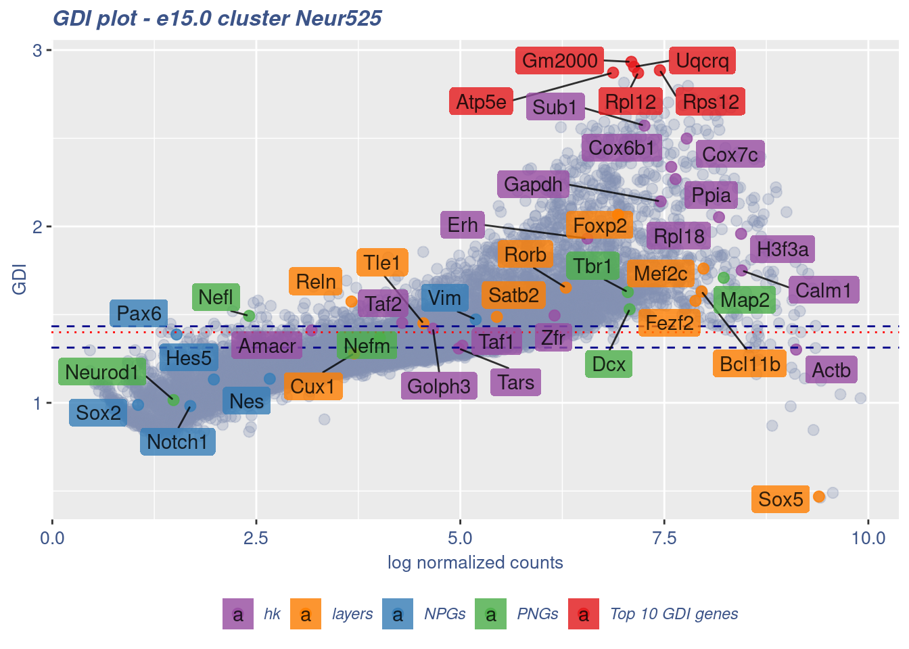
[1] "The cluster 'Neur525' is not uniform"
[1] "The percentage of genes with GDI above 1.4 is: 30.16%"
[1] "The last percentile (99%) of the GDI values is: 2.3522"Check uniformity of Cortical or hippocampal glutamatergic cluster: Neur508
FB_Neur508_Cells <-
rownames(metaNeuron)[metaNeuron[["ClusterName"]] == "Neur508"]
c(FB_Neur508_IsUniform, FB_Neur508_HighGDIRatio,
FB_Neur508_LastPercentile, FB_Neur508_GDIPlot) %<-%
clusterIsUniform(fb150Obj, cluster = "Neur508",
cells = FB_Neur508_Cells, GDIThreshold = 1.4)[1] "The cluster 'Neur508' is uniform"
[1] "The percentage of genes with GDI above 1.4 is: 0.46%"
[1] "The last percentile (99%) of the GDI values is: 1.3701"Check uniformity of Cortical or hippocampal glutamatergic cluster: Neur509
FB_Neur509_Cells <-
rownames(metaNeuron)[metaNeuron[["ClusterName"]] == "Neur509"]
c(FB_Neur509_IsUniform, FB_Neur509_HighGDIRatio,
FB_Neur509_LastPercentile, FB_Neur509_GDIPlot) %<-%
clusterIsUniform(fb150Obj, cluster = "Neur509",
cells = FB_Neur509_Cells, GDIThreshold = 1.4)[1] "The cluster 'Neur509' is uniform"
[1] "The percentage of genes with GDI above 1.4 is: 0.67%"
[1] "The last percentile (99%) of the GDI values is: 1.3811"Check uniformity of Cortical or hippocampal glutamatergic cluster: Neur507
FB_Neur507_Cells <-
rownames(metaNeuron)[metaNeuron[["ClusterName"]] == "Neur507"]
c(FB_Neur507_IsUniform, FB_Neur507_HighGDIRatio,
FB_Neur507_LastPercentile, FB_Neur507_GDIPlot) %<-%
clusterIsUniform(fb150Obj, cluster = "Neur507",
cells = FB_Neur507_Cells, GDIThreshold = 1.4)[1] "The cluster 'Neur507' is uniform"
[1] "The percentage of genes with GDI above 1.4 is: 0.94%"
[1] "The last percentile (99%) of the GDI values is: 1.3939"Check uniformity of Cortical or hippocampal glutamatergic cluster: Neur508 and Neur509
FB_Neur508.Neur509_Cells <- c(
rownames(metaNeuron)[metaNeuron[["ClusterName"]] == "Neur508"],
rownames(metaNeuron)[metaNeuron[["ClusterName"]] == "Neur509"]
)
c(FB_Neur508.Neur509_IsUniform, FB_Neur508.Neur509_HighGDIRatio,
FB_Neur508.Neur509_LastPercentile, FB_Neur508.Neur509_GDIPlot) %<-%
clusterIsUniform(fb150Obj, cluster = "Neur508.Neur509",
cells = FB_Neur508.Neur509_Cells, GDIThreshold = 1.4)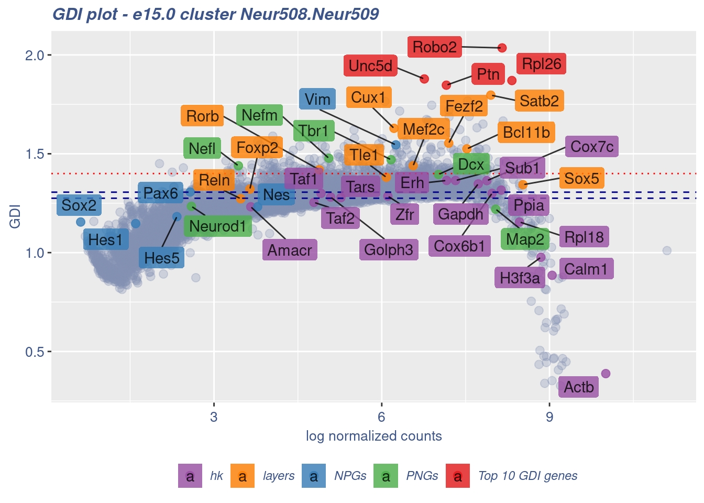
[1] "The cluster 'Neur508.Neur509' is not uniform"
[1] "The percentage of genes with GDI above 1.4 is: 2.63%"
[1] "The last percentile (99%) of the GDI values is: 1.4529"Check uniformity of Cortical or hippocampal glutamatergic cluster: Neur508 and Neur507
FB_Neur508.Neur507_Cells <- c(
rownames(metaNeuron)[metaNeuron[["ClusterName"]] == "Neur508"],
rownames(metaNeuron)[metaNeuron[["ClusterName"]] == "Neur507"]
)
c(FB_Neur508.Neur507_IsUniform, FB_Neur508.Neur507_HighGDIRatio,
FB_Neur508.Neur507_LastPercentile, FB_Neur508.Neur507_GDIPlot) %<-%
clusterIsUniform(fb150Obj, cluster = "Neur508.Neur507",
cells = FB_Neur508.Neur507_Cells, GDIThreshold = 1.4)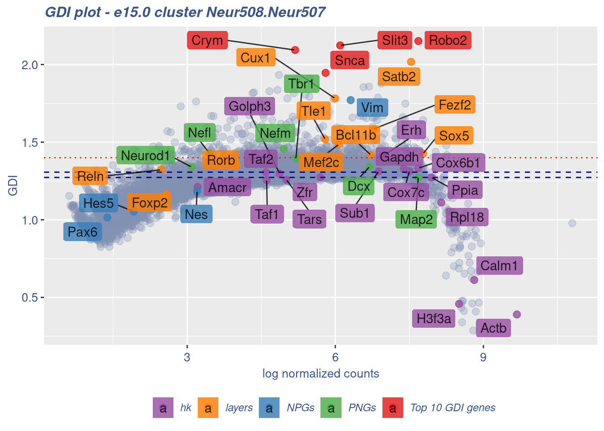
[1] "The cluster 'Neur508.Neur507' is not uniform"
[1] "The percentage of genes with GDI above 1.4 is: 3.76%"
[1] "The last percentile (99%) of the GDI values is: 1.5202"Check uniformity of Cortical or hippocampal glutamatergic cluster: Neur508 and Cajal-Retzius cluster: Neur679
FB_Neur508.Neur679_Cells <- c(
rownames(metaNeuron)[metaNeuron[["ClusterName"]] == "Neur508"],
rownames(metaNeuron)[metaNeuron[["ClusterName"]] == "Neur679"]
)
c(FB_Neur508.Neur679_IsUniform, FB_Neur508.Neur679_HighGDIRatio,
FB_Neur508.Neur679_LastPercentile, FB_Neur508.Neur679_GDIPlot) %<-%
clusterIsUniform(fb150Obj, cluster = "Neur508.Neur679",
cells = FB_Neur508.Neur679_Cells, GDIThreshold = 1.4)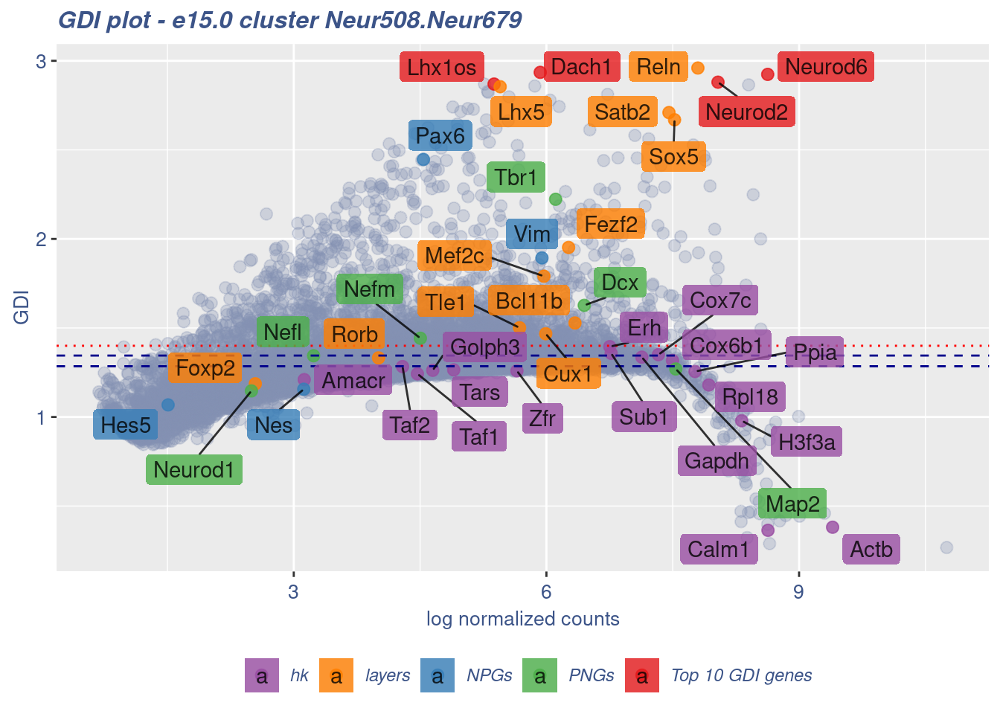
[1] "The cluster 'Neur508.Neur679' is not uniform"
[1] "The percentage of genes with GDI above 1.4 is: 15.95%"
[1] "The last percentile (99%) of the GDI values is: 2.1736"Check uniformity of Cortical or hippocampal glutamatergic cluster: Neur508 and Forebrain GABAergic cluster: Neur568
FB_Neur508.Neur568_Cells <- c(
rownames(metaNeuron)[metaNeuron[["ClusterName"]] == "Neur508"],
rownames(metaNeuron)[metaNeuron[["ClusterName"]] == "Neur568"]
)
c(FB_Neur508.Neur568_IsUniform, FB_Neur508.Neur568_HighGDIRatio,
FB_Neur508.Neur568_LastPercentile, FB_Neur508.Neur568_GDIPlot) %<-%
clusterIsUniform(fb150Obj, cluster = "Neur508.Neur568",
cells = FB_Neur508.Neur568_Cells, GDIThreshold = 1.4)[1] "The cluster 'Neur508.Neur568' is not uniform"
[1] "The percentage of genes with GDI above 1.4 is: 21.27%"
[1] "The last percentile (99%) of the GDI values is: 2.1539"Check uniformity of Cortical or hippocampal glutamatergic cluster: Neur509 and Cajal-Retzius cluster: Neur679
FB_Neur509.Neur679_Cells <- c(
rownames(metaNeuron)[metaNeuron[["ClusterName"]] == "Neur509"],
rownames(metaNeuron)[metaNeuron[["ClusterName"]] == "Neur679"]
)
c(FB_Neur509.Neur679_IsUniform, FB_Neur509.Neur679_HighGDIRatio,
FB_Neur509.Neur679_LastPercentile, FB_Neur509.Neur679_GDIPlot) %<-%
clusterIsUniform(fb150Obj, cluster = "Neur509.Neur679",
cells = FB_Neur509.Neur679_Cells, GDIThreshold = 1.4)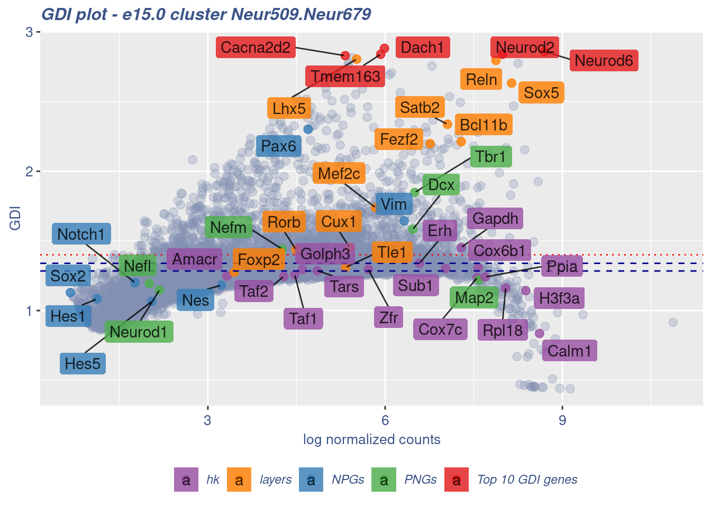
[1] "The cluster 'Neur509.Neur679' is not uniform"
[1] "The percentage of genes with GDI above 1.4 is: 14.34%"
[1] "The last percentile (99%) of the GDI values is: 2.1308"Check uniformity of Cortical or hippocampal glutamatergic cluster: Neur507 and Cajal-Retzius cluster: Neur679
FB_Neur507.Neur679_Cells <- c(
rownames(metaNeuron)[metaNeuron[["ClusterName"]] == "Neur507"],
rownames(metaNeuron)[metaNeuron[["ClusterName"]] == "Neur679"]
)
c(FB_Neur507.Neur679_IsUniform, FB_Neur507.Neur679_HighGDIRatio,
FB_Neur507.Neur679_LastPercentile, FB_Neur507.Neur679_GDIPlot) %<-%
clusterIsUniform(fb150Obj, cluster = "Neur507.Neur679",
cells = FB_Neur507.Neur679_Cells, GDIThreshold = 1.4)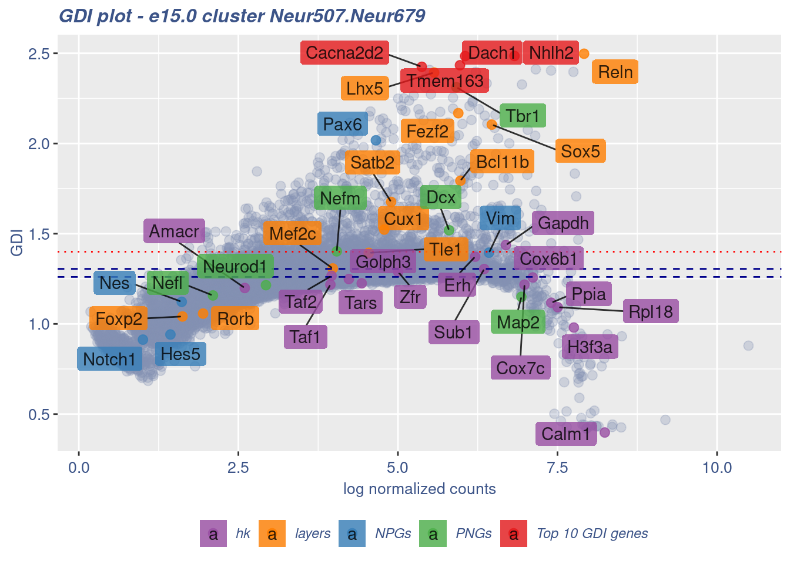
[1] "The cluster 'Neur507.Neur679' is not uniform"
[1] "The percentage of genes with GDI above 1.4 is: 8.6%"
[1] "The last percentile (99%) of the GDI values is: 1.8754"Check uniformity of Cortical or hippocampal glutamatergic cluster: Neur508 and 40 cells taken from Cajal-Retzius cluster: Neur679
set.seed(639245)
print(paste0("Cluser Neur508 size: ", sum(metaNeuron[["ClusterName"]] == "Neur508")))[1] "Cluser Neur508 size: 397"FB_Neur508.s40oNeur679_Cells <- c(
rownames(metaNeuron)[metaNeuron[["ClusterName"]] == "Neur508"],
sample(rownames(metaNeuron)[metaNeuron[["ClusterName"]] == "Neur679"], 40)
)
c(FB_Neur508.s40oNeur679_IsUniform, FB_Neur508.s40oNeur679_HighGDIRatio,
FB_Neur508.s40oNeur679_LastPercentile, FB_Neur508.s40oNeur679_GDIPlot) %<-%
clusterIsUniform(fb150Obj, cluster = "Neur508.s40oNeur679",
cells = FB_Neur508.s40oNeur679_Cells, GDIThreshold = 1.4)[1] "The cluster 'Neur508.s40oNeur679' is not uniform"
[1] "The percentage of genes with GDI above 1.4 is: 6.95%"
[1] "The last percentile (99%) of the GDI values is: 1.8052"Check uniformity of Cortical or hippocampal glutamatergic cluster: Neur508 and 20 cells taken from Cajal-Retzius cluster: Neur679
set.seed(639245)
print(paste0("Cluser Neur508 size: ", sum(metaNeuron[["ClusterName"]] == "Neur508")))[1] "Cluser Neur508 size: 397"FB_Neur508.s20oNeur679_Cells <- c(
rownames(metaNeuron)[metaNeuron[["ClusterName"]] == "Neur508"],
sample(rownames(metaNeuron)[metaNeuron[["ClusterName"]] == "Neur679"], 20)
)
c(FB_Neur508.s20oNeur679_IsUniform, FB_Neur508.s20oNeur679_HighGDIRatio,
FB_Neur508.s20oNeur679_LastPercentile, FB_Neur508.s20oNeur679_GDIPlot) %<-%
clusterIsUniform(fb150Obj, cluster = "Neur508.s20oNeur679",
cells = FB_Neur508.s20oNeur679_Cells, GDIThreshold = 1.4)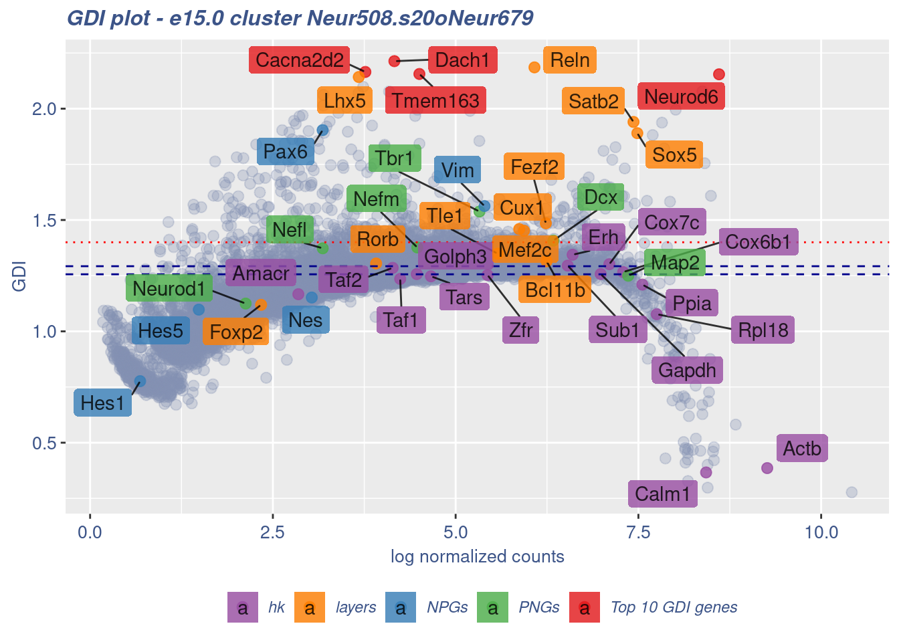
[1] "The cluster 'Neur508.s20oNeur679' is not uniform"
[1] "The percentage of genes with GDI above 1.4 is: 4.3%"
[1] "The last percentile (99%) of the GDI values is: 1.61"Check uniformity of Cortical or hippocampal glutamatergic cluster: Neur508 and 10 cells taken from Cajal-Retzius cluster: Neur679
set.seed(639245)
print(paste0("Cluser Neur508 size: ", sum(metaNeuron[["ClusterName"]] == "Neur508")))[1] "Cluser Neur508 size: 397"FB_Neur508.s10oNeur679_Cells <- c(
rownames(metaNeuron)[metaNeuron[["ClusterName"]] == "Neur508"],
sample(rownames(metaNeuron)[metaNeuron[["ClusterName"]] == "Neur679"], 10)
)
c(FB_Neur508.s10oNeur679_IsUniform, FB_Neur508.s10oNeur679_HighGDIRatio,
FB_Neur508.s10oNeur679_LastPercentile, FB_Neur508.s10oNeur679_GDIPlot) %<-%
clusterIsUniform(fb150Obj, cluster = "Neur508.s10oNeur679",
cells = FB_Neur508.s10oNeur679_Cells, GDIThreshold = 1.4)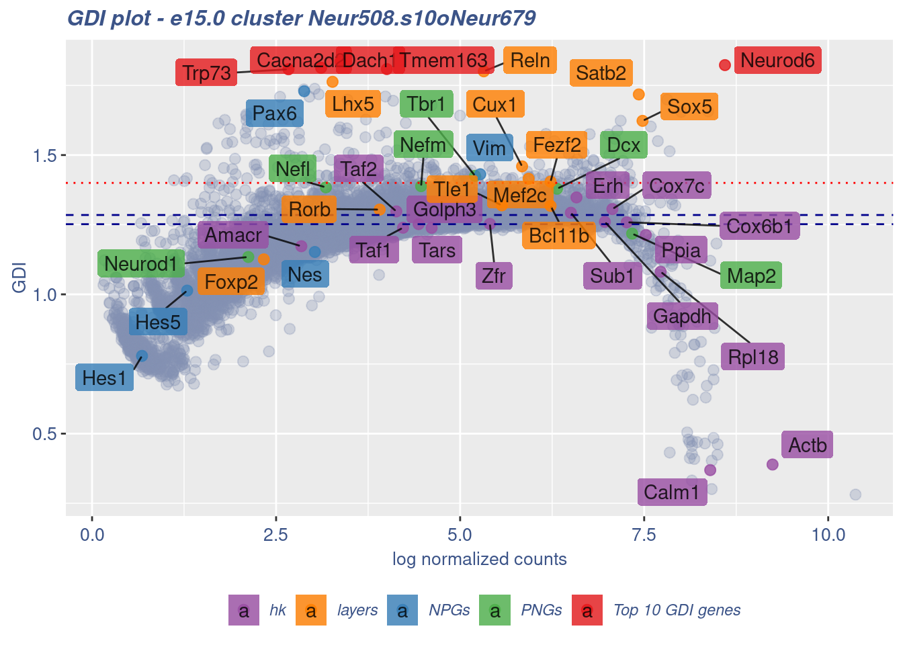
[1] "The cluster 'Neur508.s10oNeur679' is not uniform"
[1] "The percentage of genes with GDI above 1.4 is: 1.92%"
[1] "The last percentile (99%) of the GDI values is: 1.4542"Check uniformity of Cortical or hippocampal glutamatergic cluster: Neur508 and 40 cells taken from all Neuron - non Cortical or hippocampal glutamatergic cells
set.seed(639245)
print(paste0("Cluser Neur508 size: ", sum(metaNeuron[["ClusterName"]] == "Neur508")))[1] "Cluser Neur508 size: 397"FB_Neur508.s40oNonCHGl_Cells <- c(
rownames(metaNeuron)[metaNeuron[["ClusterName"]] == "Neur508"],
sample(rownames(metaNeuron)[metaNeuron[["Subclass"]] != "Cortical or hippocampal glutamatergic"], 40)
)
c(FB_Neur508.s40oNonCHGl_IsUniform, FB_Neur508.s40oNonCHGl_HighGDIRatio,
FB_Neur508.s40oNonCHGl_LastPercentile, FB_Neur508.s40oNonCHGl_GDIPlot) %<-%
clusterIsUniform(fb150Obj, cluster = "Neur508.s40oNonCHGl",
cells = FB_Neur508.s40oNonCHGl_Cells, GDIThreshold = 1.4)[1] "The cluster 'Neur508.s40oNonCHGl' is not uniform"
[1] "The percentage of genes with GDI above 1.4 is: 3.05%"
[1] "The last percentile (99%) of the GDI values is: 1.514"Check uniformity of Cortical or hippocampal glutamatergic cluster: Neur508 and 20 cells taken from all Neuron - non Cortical or hippocampal glutamatergic cells
set.seed(639245)
print(paste0("Cluser Neur508 size: ", sum(metaNeuron[["ClusterName"]] == "Neur508")))[1] "Cluser Neur508 size: 397"FB_Neur508.s20oNonCHGl_Cells <- c(
rownames(metaNeuron)[metaNeuron[["ClusterName"]] == "Neur508"],
sample(rownames(metaNeuron)[metaNeuron[["Subclass"]] != "Cortical or hippocampal glutamatergic"], 20)
)
c(FB_Neur508.s20oNonCHGl_IsUniform, FB_Neur508.s20oNonCHGl_HighGDIRatio,
FB_Neur508.s20oNonCHGl_LastPercentile, FB_Neur508.s20oNonCHGl_GDIPlot) %<-%
clusterIsUniform(fb150Obj, cluster = "Neur508.s20oNonCHGl",
cells = FB_Neur508.s20oNonCHGl_Cells, GDIThreshold = 1.4)[1] "The cluster 'Neur508.s20oNonCHGl' is not uniform"
[1] "The percentage of genes with GDI above 1.4 is: 1.15%"
[1] "The last percentile (99%) of the GDI values is: 1.4091"Check uniformity of Cortical or hippocampal glutamatergic cluster: Neur508 and 10 cells taken from all Neuron - non Cortical or hippocampal glutamatergic cells
set.seed(639245)
print(paste0("Cluser Neur508 size: ", sum(metaNeuron[["ClusterName"]] == "Neur508")))[1] "Cluser Neur508 size: 397"FB_Neur508.s10oNonCHGl_Cells <- c(
rownames(metaNeuron)[metaNeuron[["ClusterName"]] == "Neur508"],
sample(rownames(metaNeuron)[metaNeuron[["Subclass"]] != "Cortical or hippocampal glutamatergic"], 10)
)
c(FB_Neur508.s10oNonCHGl_IsUniform, FB_Neur508.s10oNonCHGl_HighGDIRatio,
FB_Neur508.s10oNonCHGl_LastPercentile, FB_Neur508.s10oNonCHGl_GDIPlot) %<-%
clusterIsUniform(fb150Obj, cluster = "Neur508.s10oNonCHGl",
cells = FB_Neur508.s10oNonCHGl_Cells, GDIThreshold = 1.4)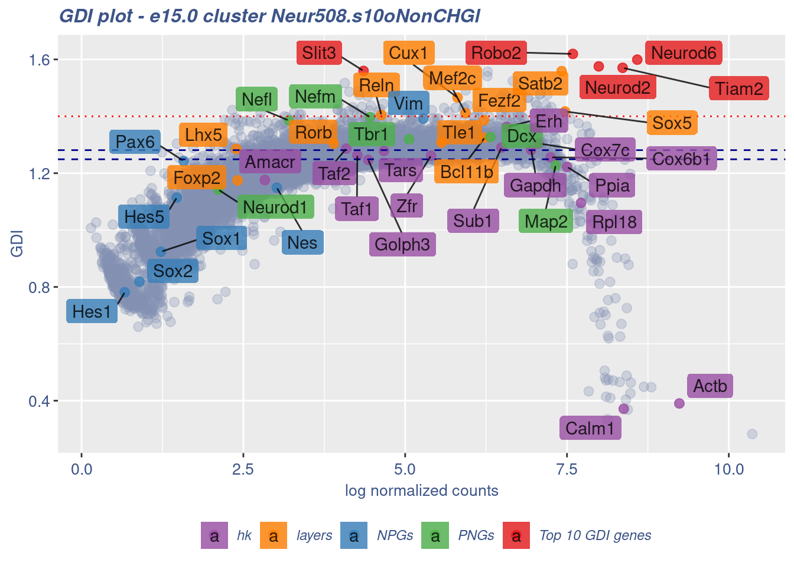
[1] "The cluster 'Neur508.s10oNonCHGl' is uniform"
[1] "The percentage of genes with GDI above 1.4 is: 0.67%"
[1] "The last percentile (99%) of the GDI values is: 1.3853"Check uniformity of Cortical or hippocampal glutamatergic cluster: Neur509 and 40 cells taken from Forebrain GABAergic cluster: Neur568
set.seed(639245)
print(paste0("Cluser Neur509 size: ", sum(metaNeuron[["ClusterName"]] == "Neur509")))[1] "Cluser Neur509 size: 402"FB_Neur509.s40oNeur568_Cells <- c(
rownames(metaNeuron)[metaNeuron[["ClusterName"]] == "Neur509"],
sample(rownames(metaNeuron)[metaNeuron[["ClusterName"]] == "Neur568"], 40)
)
c(FB_Neur509.s40oNeur568_IsUniform, FB_Neur509.s40oNeur568_HighGDIRatio,
FB_Neur509.s40oNeur568_LastPercentile, FB_Neur509.s40oNeur568_GDIPlot) %<-%
clusterIsUniform(fb150Obj, cluster = "Neur509.s40oNeur568",
cells = FB_Neur509.s40oNeur568_Cells, GDIThreshold = 1.4)[1] "The cluster 'Neur509.s40oNeur568' is not uniform"
[1] "The percentage of genes with GDI above 1.4 is: 4.59%"
[1] "The last percentile (99%) of the GDI values is: 1.5904"Check uniformity of Cortical or hippocampal glutamatergic cluster: Neur509 and 20 cells taken from Forebrain GABAergic cluster: Neur568
set.seed(639245)
print(paste0("Cluser Neur509 size: ", sum(metaNeuron[["ClusterName"]] == "Neur509")))[1] "Cluser Neur509 size: 402"FB_Neur509.s20oNeur568_Cells <- c(
rownames(metaNeuron)[metaNeuron[["ClusterName"]] == "Neur509"],
sample(rownames(metaNeuron)[metaNeuron[["ClusterName"]] == "Neur568"], 20)
)
c(FB_Neur509.s20oNeur568_IsUniform, FB_Neur509.s20oNeur568_HighGDIRatio,
FB_Neur509.s20oNeur568_LastPercentile, FB_Neur509.s20oNeur568_GDIPlot) %<-%
clusterIsUniform(fb150Obj, cluster = "Neur509.s20oNeur568",
cells = FB_Neur509.s20oNeur568_Cells, GDIThreshold = 1.4)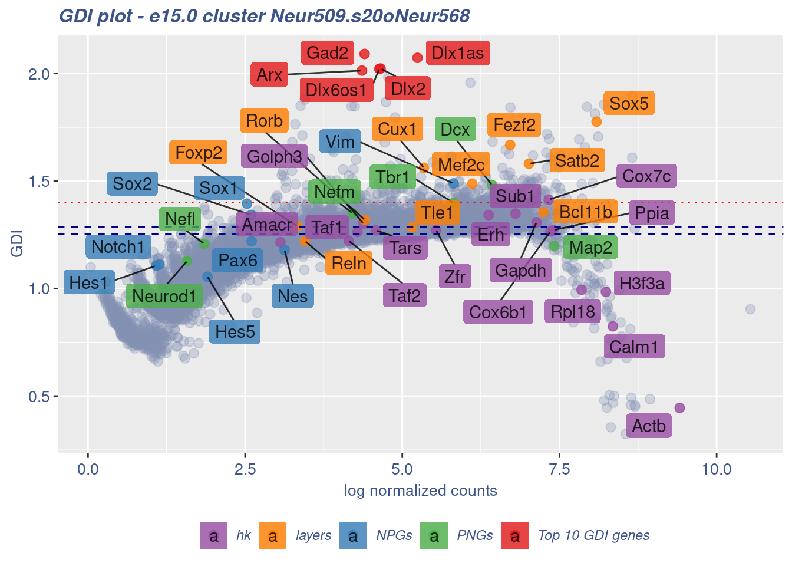
[1] "The cluster 'Neur509.s20oNeur568' is not uniform"
[1] "The percentage of genes with GDI above 1.4 is: 2.43%"
[1] "The last percentile (99%) of the GDI values is: 1.4661"Check uniformity of Cortical or hippocampal glutamatergic cluster: Neur509 and 10 cells taken from Forebrain GABAergic cluster: Neur568
set.seed(639245)
print(paste0("Cluser Neur509 size: ", sum(metaNeuron[["ClusterName"]] == "Neur509")))[1] "Cluser Neur509 size: 402"FB_Neur509.s10oNeur568_Cells <- c(
rownames(metaNeuron)[metaNeuron[["ClusterName"]] == "Neur509"],
sample(rownames(metaNeuron)[metaNeuron[["ClusterName"]] == "Neur568"], 10)
)
c(FB_Neur509.s10oNeur568_IsUniform, FB_Neur509.s10oNeur568_HighGDIRatio,
FB_Neur509.s10oNeur568_LastPercentile, FB_Neur509.s10oNeur568_GDIPlot) %<-%
clusterIsUniform(fb150Obj, cluster = "Neur509.s10oNeur568",
cells = FB_Neur509.s10oNeur568_Cells, GDIThreshold = 1.4)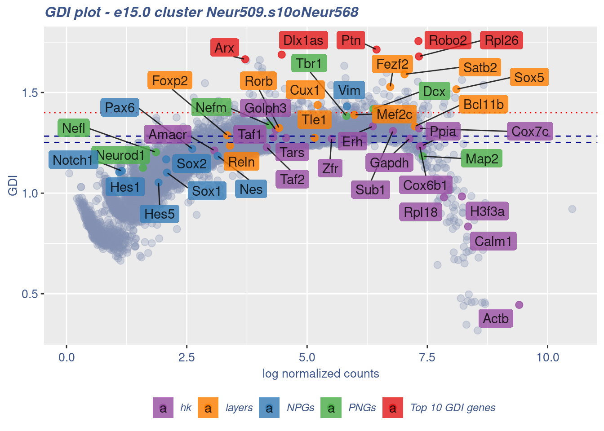
[1] "The cluster 'Neur509.s10oNeur568' is not uniform"
[1] "The percentage of genes with GDI above 1.4 is: 1.14%"
[1] "The last percentile (99%) of the GDI values is: 1.4103"Check uniformity of Forebrain GABAergic cluster: Neur568 and 20 cells taken from Cortical or hippocampal glutamatergic cluster: Neur507
set.seed(639245)
print(paste0("Cluser Neur568 size: ", sum(metaNeuron[["ClusterName"]] == "Neur568")))[1] "Cluser Neur568 size: 181"FB_Neur568.s20oNeur507_Cells <- c(
rownames(metaNeuron)[metaNeuron[["ClusterName"]] == "Neur568"],
sample(rownames(metaNeuron)[metaNeuron[["ClusterName"]] == "Neur507"], 20)
)
c(FB_Neur568.s20oNeur507_IsUniform, FB_Neur568.s20oNeur507_HighGDIRatio,
FB_Neur568.s20oNeur507_LastPercentile, FB_Neur568.s20oNeur507_GDIPlot) %<-%
clusterIsUniform(fb150Obj, cluster = "Neur568.s20oNeur507",
cells = FB_Neur568.s20oNeur507_Cells, GDIThreshold = 1.4)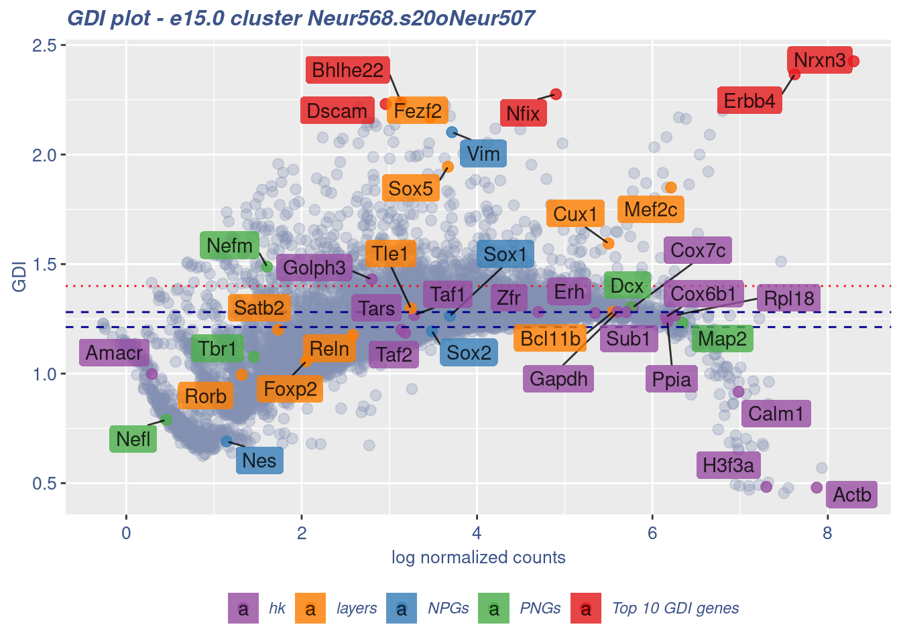
[1] "The cluster 'Neur568.s20oNeur507' is not uniform"
[1] "The percentage of genes with GDI above 1.4 is: 7.46%"
[1] "The last percentile (99%) of the GDI values is: 1.7445"Check uniformity of Forebrain GABAergic cluster: Neur568 and 10 cells taken from Cortical or hippocampal glutamatergic cluster: Neur507
set.seed(639245)
print(paste0("Cluser Neur568 size: ", sum(metaNeuron[["ClusterName"]] == "Neur568")))[1] "Cluser Neur568 size: 181"FB_Neur568.s10oNeur507_Cells <- c(
rownames(metaNeuron)[metaNeuron[["ClusterName"]] == "Neur568"],
sample(rownames(metaNeuron)[metaNeuron[["ClusterName"]] == "Neur507"], 10)
)
c(FB_Neur568.s10oNeur507_IsUniform, FB_Neur568.s10oNeur507_HighGDIRatio,
FB_Neur568.s10oNeur507_LastPercentile, FB_Neur568.s10oNeur507_GDIPlot) %<-%
clusterIsUniform(fb150Obj, cluster = "Neur568.s10oNeur507",
cells = FB_Neur568.s10oNeur507_Cells, GDIThreshold = 1.4)
[1] "The cluster 'Neur568.s10oNeur507' is not uniform"
[1] "The percentage of genes with GDI above 1.4 is: 1.9%"
[1] "The last percentile (99%) of the GDI values is: 1.4669"Check uniformity of Forebrain GABAergic cluster: Neur568 and 5 cells taken from Cortical or hippocampal glutamatergic cluster: Neur507
set.seed(639245)
print(paste0("Cluser Neur568 size: ", sum(metaNeuron[["ClusterName"]] == "Neur568")))[1] "Cluser Neur568 size: 181"FB_Neur568.s5oNeur507_Cells <- c(
rownames(metaNeuron)[metaNeuron[["ClusterName"]] == "Neur568"],
sample(rownames(metaNeuron)[metaNeuron[["ClusterName"]] == "Neur507"], 5)
)
c(FB_Neur568.s5oNeur507_IsUniform, FB_Neur568.s5oNeur507_HighGDIRatio,
FB_Neur568.s5oNeur507_LastPercentile, FB_Neur568.s5oNeur507_GDIPlot) %<-%
clusterIsUniform(fb150Obj, cluster = "Neur568.s5oNeur507",
cells = FB_Neur568.s5oNeur507_Cells, GDIThreshold = 1.4)[1] "The cluster 'Neur568.s5oNeur507' is uniform"
[1] "The percentage of genes with GDI above 1.4 is: 0.48%"
[1] "The last percentile (99%) of the GDI values is: 1.3517"sessionInfo()R version 4.3.0 (2023-04-21)
Platform: x86_64-pc-linux-gnu (64-bit)
Running under: Ubuntu 20.04.6 LTS
Matrix products: default
BLAS: /usr/lib/x86_64-linux-gnu/blas/libblas.so.3.9.0
LAPACK: /usr/lib/x86_64-linux-gnu/lapack/liblapack.so.3.9.0
locale:
[1] LC_CTYPE=C.UTF-8 LC_NUMERIC=C LC_TIME=C.UTF-8
[4] LC_COLLATE=C.UTF-8 LC_MONETARY=C.UTF-8 LC_MESSAGES=C.UTF-8
[7] LC_PAPER=C.UTF-8 LC_NAME=C LC_ADDRESS=C
[10] LC_TELEPHONE=C LC_MEASUREMENT=C.UTF-8 LC_IDENTIFICATION=C
time zone: Europe/Berlin
tzcode source: system (glibc)
attached base packages:
[1] stats graphics grDevices utils datasets methods base
other attached packages:
[1] COTAN_2.1.5 zeallot_0.1.0 tibble_3.2.1 ggplot2_3.4.2
loaded via a namespace (and not attached):
[1] RColorBrewer_1.1-3 rstudioapi_0.14 jsonlite_1.8.4
[4] shape_1.4.6 umap_0.2.10.0 magrittr_2.0.3
[7] spatstat.utils_3.0-3 farver_2.1.1 rmarkdown_2.21
[10] GlobalOptions_0.1.2 vctrs_0.6.1 ROCR_1.0-11
[13] spatstat.explore_3.2-1 askpass_1.1 htmltools_0.5.5
[16] sctransform_0.3.5 parallelly_1.36.0 KernSmooth_2.23-20
[19] htmlwidgets_1.6.2 ica_1.0-3 plyr_1.8.8
[22] plotly_4.10.1 zoo_1.8-12 igraph_1.4.2
[25] mime_0.12 lifecycle_1.0.3 iterators_1.0.14
[28] pkgconfig_2.0.3 Matrix_1.5-4.1 R6_2.5.1
[31] fastmap_1.1.1 fitdistrplus_1.1-8 future_1.32.0
[34] shiny_1.7.4 clue_0.3-64 digest_0.6.31
[37] colorspace_2.1-0 patchwork_1.1.2 S4Vectors_0.38.0
[40] Seurat_4.3.0 tensor_1.5 RSpectra_0.16-1
[43] irlba_2.3.5.1 labeling_0.4.2 progressr_0.13.0
[46] RcppZiggurat_0.1.6 fansi_1.0.4 spatstat.sparse_3.0-1
[49] httr_1.4.5 polyclip_1.10-4 abind_1.4-5
[52] compiler_4.3.0 withr_2.5.0 doParallel_1.0.17
[55] viridis_0.6.2 dendextend_1.17.1 MASS_7.3-59
[58] openssl_2.0.6 rjson_0.2.21 tools_4.3.0
[61] lmtest_0.9-40 httpuv_1.6.9 future.apply_1.11.0
[64] goftest_1.2-3 glue_1.6.2 nlme_3.1-162
[67] promises_1.2.0.1 grid_4.3.0 Rtsne_0.16
[70] cluster_2.1.4 reshape2_1.4.4 generics_0.1.3
[73] gtable_0.3.3 spatstat.data_3.0-1 tidyr_1.3.0
[76] data.table_1.14.8 sp_1.6-0 utf8_1.2.3
[79] BiocGenerics_0.46.0 spatstat.geom_3.2-1 RcppAnnoy_0.0.20
[82] ggrepel_0.9.3 RANN_2.6.1 foreach_1.5.2
[85] pillar_1.9.0 stringr_1.5.0 later_1.3.0
[88] circlize_0.4.15 splines_4.3.0 dplyr_1.1.2
[91] lattice_0.21-8 survival_3.5-5 deldir_1.0-6
[94] tidyselect_1.2.0 ComplexHeatmap_2.16.0 miniUI_0.1.1.1
[97] pbapply_1.7-0 knitr_1.42 gridExtra_2.3
[100] IRanges_2.34.0 scattermore_1.2 stats4_4.3.0
[103] xfun_0.39 factoextra_1.0.7 matrixStats_1.0.0
[106] stringi_1.7.12 lazyeval_0.2.2 yaml_2.3.7
[109] evaluate_0.20 codetools_0.2-19 cli_3.6.1
[112] RcppParallel_5.1.7 uwot_0.1.14 xtable_1.8-4
[115] reticulate_1.30 munsell_0.5.0 Rcpp_1.0.10
[118] globals_0.16.2 spatstat.random_3.1-4 png_0.1-8
[121] parallel_4.3.0 Rfast_2.0.7 ellipsis_0.3.2
[124] assertthat_0.2.1 parallelDist_0.2.6 listenv_0.9.0
[127] ggthemes_4.2.4 viridisLite_0.4.1 scales_1.2.1
[130] ggridges_0.5.4 SeuratObject_4.1.3 leiden_0.4.3
[133] purrr_1.0.1 crayon_1.5.2 GetoptLong_1.0.5
[136] rlang_1.1.0 cowplot_1.1.1